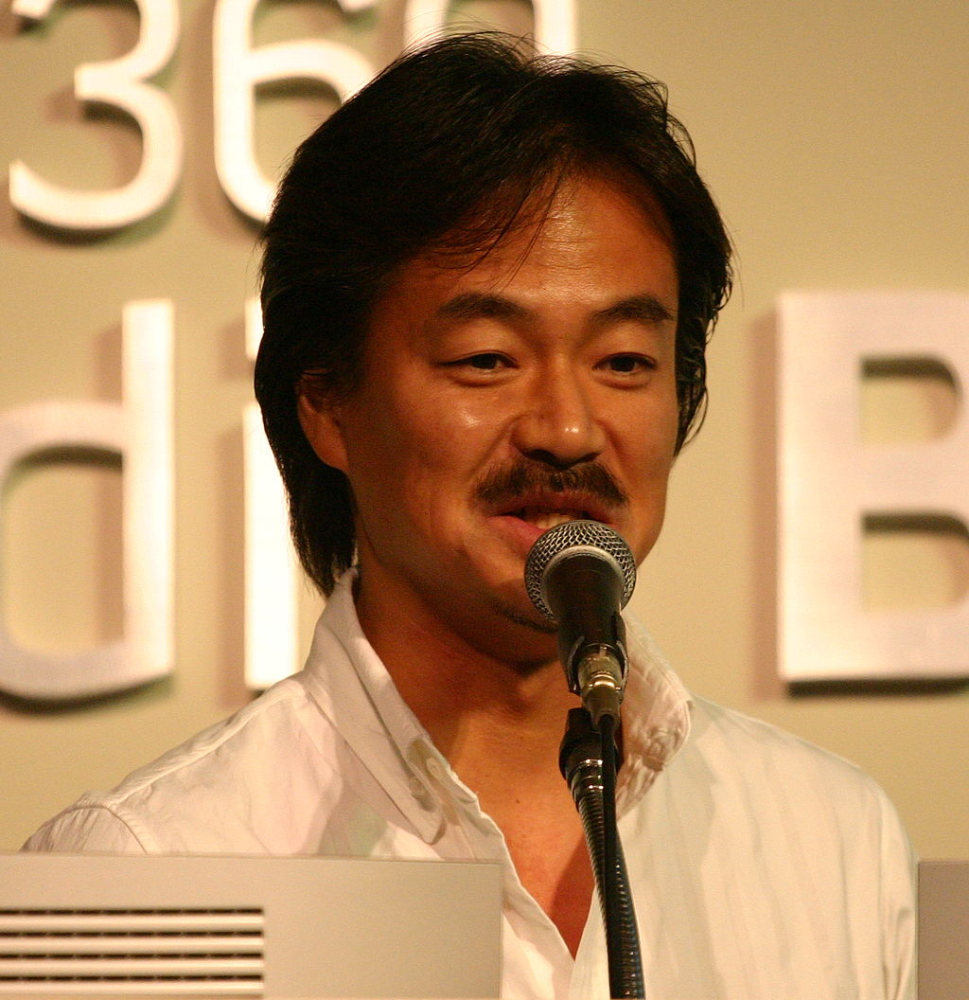
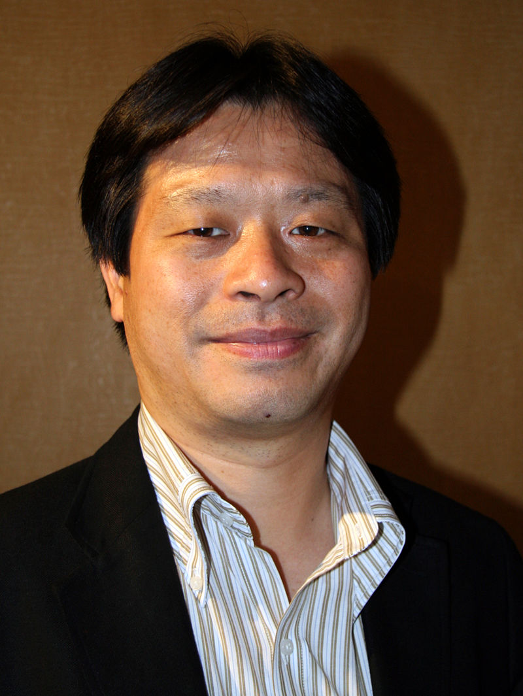
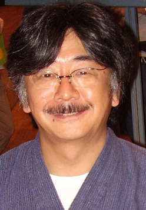

Jogos > RPG Saiba tudo sobre o Fintal Fantasy VII Atualizado em 06/Dezembro/2020 Desenvolvimento  Hironobu Sakaguchi, produtor de Final Fantasy VII. Os planejamentos iniciais de Final Fantasy VII começaram em 1994, logo depois do lançamento de Final Fantasy VI. Na época, a intenção era fazer um jogo com gráficos bidimensionais para o Super Nintendo Entertainment System.Hironobu Sakaguchi, criador da série Final Fantasy, originalmente planejou uma história para o jogo, porém esse primeiro roteiro era completamente diferente do produto final. Tetsuya Nomura, desenhista de personagens, disse que Sakaguchi "queria fazer algo parecido com uma história de detetive". A primeira parte envolvia um personagem "temperamental" chamado de Detetive Joe perseguindo os personagens principais após estes terem explodido a cidade de Midgar, com conceitos como a Corrente da Vida já estando presentes nessa primeira versão. A história mudou com a chegada de Nomura e dos roteiristas Yoshinori Kitase e Kazushige Nojima, com estes dois últimos introduzindo a Shinra e a AVALANCHE, além da história de Cloud Strife e sua relação com Sephiroth. Masato Kato foi mais tarde também trazido para o projeto e contribuiu escrevendo três cenas para o jogo. Entretanto, vários membros da equipe também estavam trabalhando paralelamente em Chrono Trigger, com o desenvolvimento de Final Fantasy VII precisando ser interrompido quando esse projeto tornou-se grande o bastante para precisar da ajuda de Kitase e outros projetistas. Por causa disso, algumas ideias originalmente pensadas para Final Fantasy VII acabaram usadas no próprio Chrono Trigger. Outras ideias, como uma personagem feiticeira chamada Edea, não foram usadas até projetos posteriores como Final Fantasy VIII. O desenvolvimento recomeçou no final de 1995, necessitando dos esforços de aproximadamente 120 artistas e programadores. A equipe trabalhou tanto nos escritórios da SquareSoft no Japão quanto no novo escritório em Los Angeles, Estados Unidos, com este segundo grupo ficando encarregado principalmente dos cenários das cidades. Final Fantasy VII foi o jogo eletrônico mais caro da história até então, com seu orçamento de desenvolvimento estando por volta de 45 milhões de dólares em valores da época. Kitase estava preocupado que a franquia poderia ficar para trás caso não fizesse a transição para os gráficos tridimensionais que outros jogos estavam começando a usar,[18] assim os desenvolvedores decidiram criar um pequeno demo experimental produzido com as estações de trabalho SGI Onyx. O vídeo, chamado de Final Fantasy SGI, mostrava personagens de Final Fantasy VI lutando em tempo real contra um golem, todos modelados tridimensionalmente. O demo causou boa impressão na equipe e foi decidido usar a tecnologia tridimensional para Final Fantasy VII, com várias das mecânicas de projeto sendo integradas ao jogo. Devido a grande quantidade de dados e memória necessária, apenas o formato CD-ROM possuía a capacidade de receber o projeto.[14][20] Entretanto, a Nintendo, para qual a Square havia desenvolvido todos os Final Fantasy anteriores, havia decidido continuar a usar cartuchos para o novo console Nintendo 64. Isso acabou criando uma disputa entre as duas empresas que acabou resultando na Square encerrando sua relação com a Nintendo. Foi depois anunciado em 12 de janeiro de 1996 que Final Fantasy VII seria lançado exclusivamente para o PlayStation da Sony.[20] Executivos da Square também explicaram que nem mesmo o Nintendo 64DD possuía capacidade de armazenamento suficiente, já que mais de trinta discos seriam necessários para guardar todos os dados do jogo. Desenho  Yoshinori Kitase, diretor e roteirista de Final Fantasy VII. A transição para ambientes tridimensionais mostrou-se um desafio para a equipe, com personagens renderizados em tempo real precisando ser integrados em ambientes pré-renderizados. Para auxiliar nessa tarefa os desenvolvedores empregaram os softwares PowerAnimator e Softimage, os melhores do gênero disponíveis na época. A equipe alternadamente adotou cenários tridimensionais pré-renderizados e ambientes desenhados à mão pelos artistas do jogo, tudo com o objetivo de alcançar um produto final mais realista e detalhado do que os jogos anteriores da série; este processo de criação foi descrito posteriormente por Kitase como "uma tarefa muito difícil". Pela primeira vez desde o Final Fantasy original, Sakaguchi deu prioridade aos sistemas de jogabilidade sobre a história devido a inexperiência da equipe com os gráficos tridimensionais. Segundo Kitase, "a partir do momento que foi tomada a decisão de usar o CD, [Sakaguchi] estabeleceu um procedimento para a equipe: 'se o jogador ficar ciente do tempo que está jogando, teremos fracassado'". Dessa forma os desenvolvedores concentraram-se em criar um mundo de jogo envolvente: além da quase onipresença da música, vários eventos foram programados para atrair a atenção dos jogadores e distraí-los enquanto outros dados estavam sendo carregados. A grande capacidade de armazenamento do CD-ROM permitiu a inclusão de mais de quarenta minutos de full motion video, criando uma dificuldade a mais de garantir que a inferioridade clara da qualidade dos gráficos de jogo não fosse tão óbvia quando comparados às animações. Yoshitaka Amano, o desenhista de personagens desde o primeiro título da franquia, saiu de sua posição habitual porque o estilo de suas ilustrações não foi considerado muito compatível e adaptável com o novo formato tridimensional do jogo. Nomura acabou assumindo a posição de desenhista de personagens chefe, com Amano ficando responsável foi projetar o mapa do mundo e desenhar o logotipo. O primeiro personagem que Nomura criou foi Cloud, com a aparência dele mudando no decorrer da produção: no desenho original ele tinha um cabelo negro, liso e penteado para trás que tinha a intenção de servir como contraste aos cabelos longos e prateados de Sephiroth. Porém, ele temeu que o personagem não era muito heróico e assim mudou a aparência para a versão final em que o cabelo é loiro e pontudo. Em seguida Nomura cuidou de Barret Wallace e Aerith Gainsborough. Kitase e Sakaguchi acharam que o elenco ainda era muito pequeno, então Nomura adicionou vários outros personagens. Tifa Lockhart tinha a intenção de ser um contraponto claro à Aerith, com Nomura passando muito tempo trabalhando nas cores de sua roupa e no comprimento de sua saia. Vincent Valentine mudou de pesquisador para detetive e depois químico até chegar na figura de um ex-Turk com um passado trágico. Red XIII foi criado com tatuagens no estilo nativo-americano e depois ganhou uma cauda em chamas para maior personalidade. Cid Highwind manteve a tradição da série de sempre ter um personagem com o nome Cid, enquanto Yuffie Kisaragi e Cait Sith foram criados para adicionar um "fator fofo". Nomura também redesenhou os chocobos e assumiu as animações das convocações e Limit Breaks. Narrativa O diretor de arte Yusuke Naora descreveu a atmosfera do jogo como "sombria e estranha", que foi alcançada graças aos novos efeitos gráficos que possibilitavam "evocar uma luz saindo das trevas". Segundo os desenvolvedores, a história de Final Fantasy VII tinha a intenção de ser mais realista e era inspirada em diversas lendas e conceitos religiosos e filosóficos, "[utilizada] como uma estrutura para aspirações éticas nobres e preocupações ecológicas". Esses conceitos também foram levados em conta na criação de nomes de personagens e lugares, como por exemplo Sephiroth e Midgar. Em especial foi a personificação do planeta como Gaia, em referência direta à hipótese de Gaia, através da Corrente da Vida (consciência) e Mako (energia). Nomes e conceitos também fazem várias referências ao cristianismo, mitologia nórdica e xintoísmo. Desde os estágios iniciais de produção o roteiro previa a morte de um dos personagens principais. Para Nomura não poderia ser Cloud por causa de se papel como protagonista, assim como Barret que poderia parecer muito clichê para a série Final Fantasy e para a ficção em geral. Ele também expressou suas críticas quanto a frequente apresentação da morte de um personagem apenas para que os roteiristas posteriormente voltassem atrás e o trouxessem de volta, que se enquadrava em uma visão romântica do sacrifício e ressurreição. Foi decidido que seria Aerith a personagem a morrer e que sua morte seria irrevogável, assumindo que os jogadores não esperariam tal virada e ficariam surpresos pela forma cruel e irreversível do acontecimento, algo que daria continuidade à atmosfera séria do jogo. Isso também permitiu que os desenvolvedores dessem mais espaço para Tifa como a principal heroína feminina. Os membros da equipe tinham o desejo de deixar em aberto alguns aspectos da história a fim que os jogadores tirassem suas próprias interpretações sobre seu significado. Nojima também afirmou que desejava que os jogadores se sentissem encorajados a especular sobre os pensamentos pessoais de Cloud durante certos momentos da história, ao invés de fornecer indicações claras. Por exemplo, o epílogo, em que Red XIII olha para as ruínas de Midgar cobertas pela vegetação, tinha intenção de deixar ambíguo o destino da humanidade já que não há vestígios de atividade ou presença humana. Anos depois do lançamento do jogo, Kitase comentou que a última cena poderia significar que a humanidade foi extinta,porém Nomura afirma que o epílogo simboliza que o homem encontrou um modo de viver em harmonia com a natureza. Música  Nobuo Uematsu, compositor da música de Final Fantasy VII.. A trilha sonora de Final Fantasy VII foi composta por Nobuo Uematsu, que também havia cuidado da música de todos os jogos anteriores da série. Uematsu compôs a trilha inteira em menos de um ano, ao contrário de Final Fantasy VI que demorou praticamente dois anos para ser finalizada. Apesar da transição para o CD-ROM ter permitido a criação de músicas com maior qualidade, o compositor decidiu usar sons gerados através de MIDI. Essa escolha foi creditada como tendo dado "um sentimento e humor bem distinto" à trilha, formando assim uma forte associação dos ouvintes entre a música e o jogo. Uematsu posteriormente afirmou que a transição para a "era PlayStation" causou "definitivamente a maior mudança" na música dos jogos eletrônicos, já que os compositores podiam usar sons criados em estúdio ao invés de sintetizadores. A primeira peça composta foi o tema de abertura; Kitase havia mostrado a Uematsu a cena inicial e pediu para que este começasse a partir desse ponto. A faixa foi bem recebida dentro da Square, algo que fez o compositor sentir que "este seria um projeto muito bom". Uematsu mais tarde comentou que a trilha sonora de Final Fantasy VII foi sua "melhor colheita" até aquele momento. Final Fantasy VII foi o primeiro jogo da franquia a ter uma faixa com vocais digitalizados, "One-Winged Angel" (片翼の天使 Katayoku no Tenshi?). Muitos críticos e fãs já afirmaram que esta é a "contribuição mais reconhecível" de Uematsu para a série Final Fantasy, apesar do compositor nunca ter esperado que ela ganhasse tanta popularidade. A peça já foi descrita como "uma fanfarra para desgraça iminente" e que ela não "segue nenhuma regra normal do gênero", sendo "possivelmente a ideia mais inovadora da história musical da série". A letra de "One-Winged Angel", um coral em latim que toca durante a última batalha do jogo, foi tirada do mesmo poema medieval que Carl Orff se baseou para criar Carmina Burana, especialmente "Estuans Interius", "O Fortuna", "Veni, Veni, Venias" e "Ave Formosissima". Uematsu afirmou que o começo da faixa é baseado na canção "Purple Haze" de Jimi Hendrix e que a peça gira ao redor da imagem de Sephiroth, com o compositor dizendo que considera a música uma "peça de rock" apesar do coral e da orquestra. Ele também afirmou que "One-Winged Angel" é sua música favorita da trilha e seu tema de batalha favorito de todos os jogos Final Fantasy em que trabalhou. Havia planos para utilizar uma "vocalista famosa" para uma canção tema colocada no final do jogo, porém a ideia foi abandonada por questões de tempo e temores sobre a coesão temática. O compositor disse que a trilha tinha um sentimento "realista", o que o impediu de usar "músicas exorbitantes e malucas". A trilha sonora cobre uma variedade de gêneros musicais, incluindo rock, techno, orquestral e coral, apesar da trilha como um todo ser principalmente orquestral. Muitas das faixas tinham a intenção de servir como músicas de fundo, porém várias delas também carregam grandes pesos emocionais como "Aerith's Theme" (エアリスのテーマ Earisu no Tēma?), que toca durante a cena de sua morte e é considerada como uma das peças mais memoráveis da trilha. Outro tema notável é "Main Theme of Final Fantasy VII" (F.F.VIIメインテーマ F. F. VII Mein Tēma?), cuja melodia é reutilizada em várias faixas da trilha.